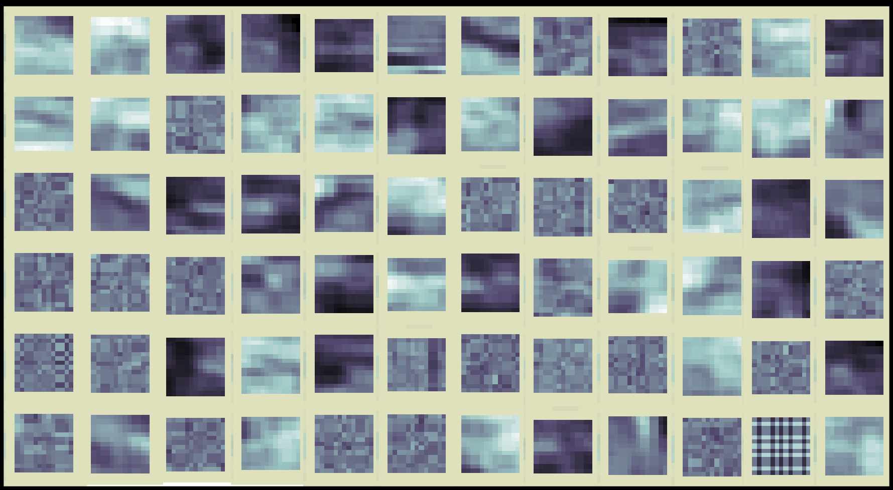

Here are some things I've made — algorithms, methods, packages — of which I'm particularly proud. As far as I know they are novel, but I haven't done deep literature searches to find out for sure.
k-nearest neighbors adaptive feature weighting
k-nearest neighbors is remarkably powerful right out of the box with the exception that it can be sensitive to how features are weighted. Feature weighting accounts for the fact that some features can be much more important than others. Getting these weights just right can be labor intensive. This method finds them automatically through an optimization similar to Powell's method.
k-nearest neighbors data reduction
To keep k-nearest neighbors running quickly, it's helpful to limit the number of points retained. One way to to do that is to randomly select a subset of the observations to keep as training points. Another is to try to cover the space more efficiently, getting the same level of accuracy with fewer points. This is a one scheme for that.
k-sparse neural network layer

k-sparse autoencoders were originally developed and presented by Alireza Makhzani and Brendan Frey. In a k-sparse layer, only the k nodes with highest magnitude activity are allowed to keep their activity on a given iteration. All others are set to zero. It results in hidden nodes with identifiable structure. The only part of my implementation I believe is new is the addition of an adaptive sensitivity term to facilitate training. Here's more on how it works and how to use it.
Evolutionary Powell's method

I built Evolutionary Powell's method as a hyperparameter optimization algorithm as part of Course 314. It is inspired by the original Powell's method, but has a stochastic element inspired by evolutionary approaches. Here's more information on how it works and how to use it.
Pathfinder

Animation of the Pathfinder algorithm in action, finding power
lines in the region of Kano, Nigeria.
Pathfinder is a many-to-many variant of Dijkstra's shortest path algorithm. I got to work on it while at Facebook when I was trying to predict the locations of medium-voltage electrical distribution grid infrastructure. It's based entirely on publicly available data sources, including nighttime satellite imagery and Open Street Map highways. Here's a tutorial on how it works and how to re-create it.
Chris Arderne did an improved re-implementation, called GridFinder which has been used by the World Bank and its partners to estimate the location of medium voltage power grids throughout Africa, and then through the rest of the world.